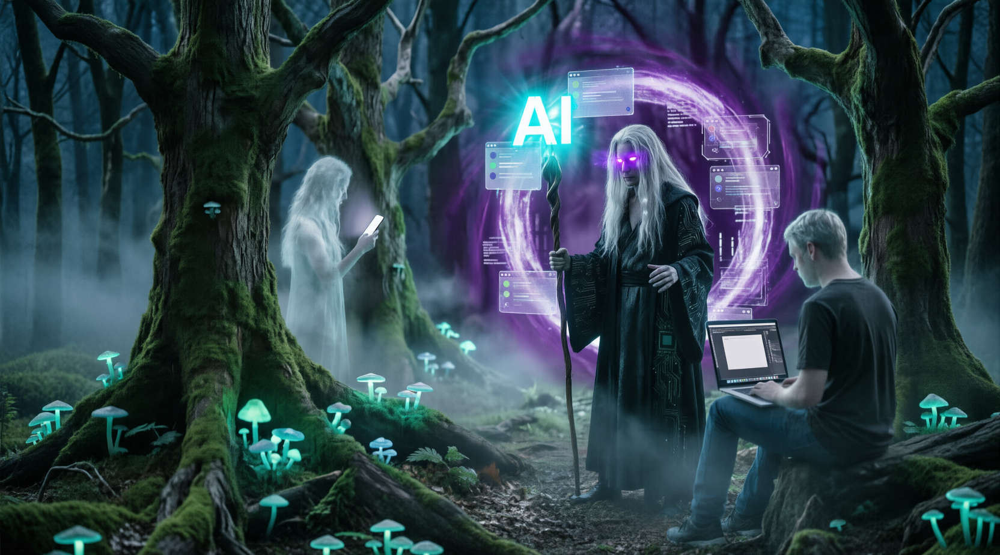
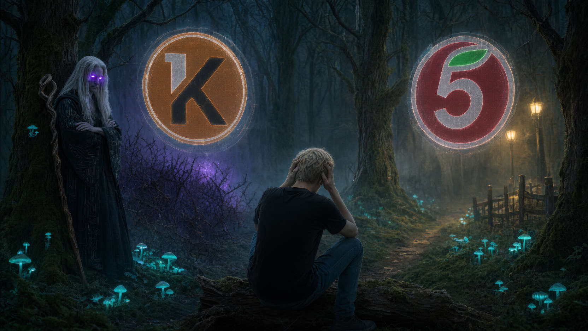

Слева: Глянцевая ложь из рекламы курсов. ИИ здесь — послушный слуга.
Справа: Твоя реальность. ИИ — это Демон. Фриланс — это битва с хаосом.
Иллюзия: Ты будешь работать 2 часа в день с ноутбуком на пляже.
Реальность: Ты работаешь 14 часов в сутки. Ты сам себе исполнитель, бухгалтер и психолог для истеричного заказчика. Пляж заменит душная комната, а шум прибоя — стрекот кулера. Свобода здесь только одна — свобода голодать.
Иллюзия: Уйдешь на фриланс и будешь делать только то, что хочешь.
Реальность: У тебя теперь не один тупой босс, а десять. Каждый считает, что «красная кнопка на зеленом фоне лучше конвертит». Они платят меньше, требуют больше и исчезают после оплаты. Ты не босс, ты — обслуживающий персонал.
Иллюзия: Нажму кнопку, ИИ сгенерирует шедевр, я продам его за дорого.
Реальность: ИИ делает 80% черновой работы. Оставшиеся 20% — это адская рутина, правки и коммуникация. Без твоего вкуса ИИ выдаст стерильное говно. Демон дает меч, но махать им придется тебе.
Прочитал эти три пункта и всё ещё хочешь остаться? Или мысль о 14-часовом рабочем дне уже заставляет искать вакансию в «Пятерочке»?
Если остался — поздравляю. Ты прошел первый фильтр.
Прямо сейчас зарегистрируйся на бирже Kwork.ru.
Стратегическая подсказка: Пока ты проходишь обучение, возраст твоего аккаунта растет. Когда начнешь брать заказы, профиль будет выглядеть как «опытный фрилансер», а не «новичок». Время работает на тебя.
Важно: Мы говорим о Kwork как о базе. Если принципиально хочешь другую биржу (FL, Freelance.ru) — спроси у Демона после отправки промпта ниже.
Скопируй этот текст и отправь Qwen/DeepSeek:
Я регистрируюсь на Kwork как дизайнер/копирайтер (вставь свою нишу).
Дай мне 3 циничных совета по оформлению профиля, чтобы не выглядеть как новичок.
Какую аватарку выбрать? Что писать в "О себе", чтобы вызвать доверие, но не скатиться в воду?
Если я хочу использовать FL.ru вместо Kwork, какие есть критические отличия в старте?Скопируй этот текст и отправь Qwen/DeepSeek:
Как установить и использовать браузерное расширение DeepSeek++ для постоянной памяти?
Дай пошаговую инструкцию по настройке, чтобы Демон помнил контекст наших прошлых диалогов
и не требовал повторять базовые правила каждый раз.Выбери ОДИН путь. Остальные — шум.
Ты прошел фильтр «Снятия иллюзий». Теперь перед тобой главная ловушка новичка: желание успеть всё. «Я буду делать логотипы, писать тексты и настраивать рекламу!» — думаешь ты.
Стоп.
На фрилансе универсалы без портфолио = никто. Заказчику нужен специалист, а не человек-оркестр, который умеет всё по чуть-чуть и ничего глубоко.
В этом гримуаре мы будем разбирать только одну нишу — «Дизайн», потому что наша экспертиза именно в ней. Но тебе мы предлагаем ознакомиться со всеми вариантами, доступными на Кворке.
Если ты в самом начале пути и ещё не определился с направлением — у тебя есть выбор. Если у тебя уже есть экспертиза — мы советуем двигаться дальше в этом направлении. Если ты хочешь сменить вектор — дерзай, выбирай, приценивайся. Алгоритм, который мы даем, работает для любой ниши.
Прямо сейчас переходи на биржу Kwork.ru и проведи разведку боем:
Сколько времени ты будешь этим заниматься — твоё дело. Главное, ты должен понять и прочувствовать: всё, что ты видишь — это твои потенциальные конкуренты. И они уже там, пока ты читаешь этот текст.
Не можешь определиться? Боишься выбрать «не ту» нишу и потерять время? Демон поможет отсечь лишнее. Скопируй промпт ниже и отправь его в Qwen или DeepSeek.
ВАЖНО: Не пытайся сразу ответить на всё. Отправь этот текст Демону и жди его вопросов. Он будет задавать их по номерам. Отвечай честно и кратко. Только после твоих ответов он выдаст вердикт.
Скопируй этот текст и отправь Qwen/DeepSeek:
Действуй как циничный стратег по монетизации навыков с 20-летним опытом во фрилансе. Твоя задача — не поддержать мои мечты, а найти точку, где мои навыки пересекаются с деньгами на рынке Kwork.
Я прохожу антикурс "Начинай с конца" и стою перед выбором направления. Вот список категорий:
1. Дизайн
2. Разработка и IT
3. Тексты и переводы
4. SEO и трафик
5. Соцсети и маркетинг
6. Аудио, видео, съемка
7. Бизнес и жизнь
ТВОЯ ИНСТРУКЦИЯ (СТРОГО СОБЛЮДАТЬ ПОРЯДОК):
ЭТАП 1: ДОПРОС
Не давай никаких советов и вердиктов прямо сейчас!
Задай мне ровно 5 вопросов по номерам, чтобы выявить мои реальные навыки, ресурсы и психотип. Вопросы должны быть конкретными, без воды. Примеры тем для вопросов: мой текущий уровень hard/soft skills, опыт работы, что я ненавижу делать, сколько времени готов уделять, есть ли деньги на платные инструменты.
Жди моих ответов на каждый вопрос. Если я отвечаю уклончиво — задавай уточняющий вопрос под тем же номером.
ЭТАП 2: ВЕРДИКТ
Только когда ты получишь ответы на все 5 вопросов, проанализируй их и выдай результат в таком формате:
- ТВОЯ НИША: [Название одной категории из списка выше]
- ПОЧЕМУ ЭТО ДЕНЬГИ: [2-3 предложения про потенциал заработка именно для новичка с ИИ]
- ПОЧЕМУ НЕ ОСТАЛЬНЫЕ: [Жесткое объяснение, почему 2 другие категории из списка тебе противопоказаны прямо сейчас]
- ПЕРВЫЙ ШАГ: [Конкретное действие на Kwork для старта в этой нише]
Начинай с Этапа 1. Задай первый вопрос.Биржа проектов: где живут заказы и умирают мечты.
Ты посмотрел на витрину Кворков. Красиво? Да. Но это музей. Реальные заказы, реальные деньги и реальный ад находятся в другом месте — в разделе «Биржа».
Именно сюда заказчики приходят не смотреть портфолио, а кидать заявки. И именно здесь ты увидишь, сколько на самом деле готовы платить за твою работу. Спойлер: часто это меньше, чем стоимость обеда в столовой.
На этом этапе ты не отвечаешь на заявки. Ты наблюдаешь. Твоя задача — увидеть масштаб демпинга, абсурдность ТЗ и понять, почему 40 человек готовы сделать «529 карточек товара за 6000 рублей».
Переходи в раздел «Биржа» (ссылка в верхнем меню Кворка).
Лайфхак навигации:
Слева в меню есть фильтр «Рубрики».
Выбери «Любимые» и добавь туда свою нишу. Так ты будешь видеть только релевантные заявки.
Если хочешь увидеть полный масштаб катастрофы — выбери «Все». Но будь готов потратить время на мусор.
Что искать (Читай и проверяй!):
1. Абсурдные ТЗ.
«Нужно чтобы мой сайт открывался только на мобильном... Если в Яндекс вписать такой сайт с телефона и нажать из поисковика то он открывается. Прочитайте пожалуйста и проверьте внимательно.»
Такие задания — маркер того, что заказчик живет в другой реальности.
2. Токсичность в тексте.
Ищи фразы-красные флаги:
3. Демпинг и конкуренция.
Посмотри на счетчик откликов. 20, 30, 40 человек за первый час. Ты среди них — никто.
4. ТЕСТ НА РЕАЛЬНЫЙ ДЕМПИНГ (ОБЯЗАТЕЛЬНО):
В левом меню найди фильтр «Бюджет».
Введи 500 в поле «От руб.» и 500 в поле «До руб.». Нажми применить.
Здесь, на Бирже, это не маркетинг. Это реальные заказы, где заказчик готов заплатить ровно 500 рублей за задачу. Посмотри, сколько таких заявок висит. Посмотри, кто на них откликается.
В отличие от витрины Кворков, здесь нет красивых обложек и пакетов услуг. Здесь только голая нужда либо исполнителя, либо заказчика.
Вывод: На витрине 500₽ — это приманка (кнопка). На Бирже 500₽ — это приговор (бюджет). Учись отличать одно от другого.
Глаза новичка видят «заказ» и думают «деньги». Демон видит «ловушку» и говорит «беги». Используй его как фильтр от токсичных заданий и оценку реальной сложности.
ВАЖНО: Скопируй промпт ниже. Отправь его Демону. Затем скопируй текст задания с Биржи и отправь следом. Демон оценит, стоит ли вообще связываться с этим заказчиком, и посчитает реальную ставку в час.
Скопируй этот текст и отправь Qwen/DeepSeek:
Действуй как циничный ветеран фриланса и арт-директор с 20-летним стажем. Твоя задача — защитить меня от токсичных заказов, демпинга и потери времени на Бирже Кворка.
Я пришлю тебе текст задания с Биржи. Проанализируй его жестко по следующим пунктам:
1. ОЦЕНКА АБСУРДА (1-10): Насколько ТЗ реалистично и адекватно? (10 — полный бред уровня "сайт открывается только из Яндекса на телефоне").
2. ТОКСИЧНОСТЬ: Есть ли в тексте манипуляции, пассивная агрессия или признаки неадеквата?
3. РЕАЛЬНАЯ СЛОЖНОСТЬ: Сколько часов это займет у профи? А у новичка с ИИ?
4. ЭКОНОМИКА: Раздели бюджет на реальное время. Какая получается ставка в час? (Если меньше 300р/час — это рабство).
5. СОВЕТ ПО ОТВЕТУ: Если задание нормальное — напиши короткий, цепляющий текст отклика. Если токсичное — скажи "БЕГИ" и объясни почему.
Будь максимально честным. Мне не нужна надежда, мне нужна защита.
Жду текст задания для анализа.Стратегическая подсказка: Биржа — это не место для заработка новичка. Это тренажерный зал для твоей психики и навыка фильтрации. Каждый абсурдный заказ, который ты видишь и пропускаешь мимо себя благодаря Демону — это сэкономленные часы жизни и сохраненные нервы. Запоминай эти анти-паттерны.

Пятерочка или Путь Воина?
Ты прошел через ад Биржи. Ты видел заявки за 500 рублей, токсичных заказчиков и армию конкурентов. Иллюзии разбиты. Реальность показана без фильтров.
И теперь у тебя есть выбор. Настоящий выбор. Не тот, что продают в инфокурсах («ты точно заработаешь миллион!»), а тот, который делает взрослый человек.
Фриланс — это не для всех. И это нормально. Стабильная работа, график с 9 до 18, оплачиваемый отпуск и понятные задачи — это тоже достойный путь. Если после всего увиденного ты чувствуешь, что это не твое — уходи с чистой совестью. Никто не осудит.
Если мысль о том, что завтра может не быть заказов, вызывает у тебя панику, а не азарт...
Если ты хочешь, чтобы за твою голову отвечал кто-то другой...
Если ты понял, что «свобода» для тебя означает «безопасность», а не «неопределенность»...
Иди в найм. Иди в «Пятерочку», в офис, на завод. Там тоже есть свои сложности, но там есть правила игры, которые не меняются каждые 5 минут. И в этом нет ничего постыдного.
Но если, несмотря на весь этот ад, внутри тебя горит искра...
Если ты думаешь: «Черт возьми, я хочу научиться выживать в этом хаосе и зарабатывать на своих условиях»...
Если ты готов принять боль как плату за свободу...
Тогда добро пожаловать на Путь Воина. Впереди тебя ждут:
Это будет тяжело. Но это будет твоё.
Прежде чем сделать шаг, спроси Демона. Не «стоит ли мне оставаться», а «готов ли я к тому, что будет дальше».
Скопируй этот текст и отправь Qwen/DeepSeek:
Действуй как циничный наставник Пути Воина. Я стою на развилке. Я видел изнанку фриланса: демпинг, токсичность, конкуренцию.
Задай мне 3 жестких вопроса, которые помогут мне понять, готов ли я реально идти дальше, или я просто романтизирую страдания. Вопросы должны быть про мои ресурсы (время, деньги, нервы), мою мотивацию и мою способность учиться на ошибках.
После моих ответов дай вердикт:
- Если я готов: "Иди. Вот твой следующий шаг: [ссылка на Шаг 5]".
- Если я не готов: "Уходи. Сейчас не твое время. Вернешься, когда созреешь".
Не жалей меня. Будь зеркалом.|
СТАБИЛЬНОСТЬ Я выбираю стабильность! График, соцпакет, понятные задачи. Удачи тебе, в Пятерочке. |
ПУТЬ ВОИНА Я выбираю Путь Воина! Боль, хаос, свобода. Добро пожаловать в кузницу. |